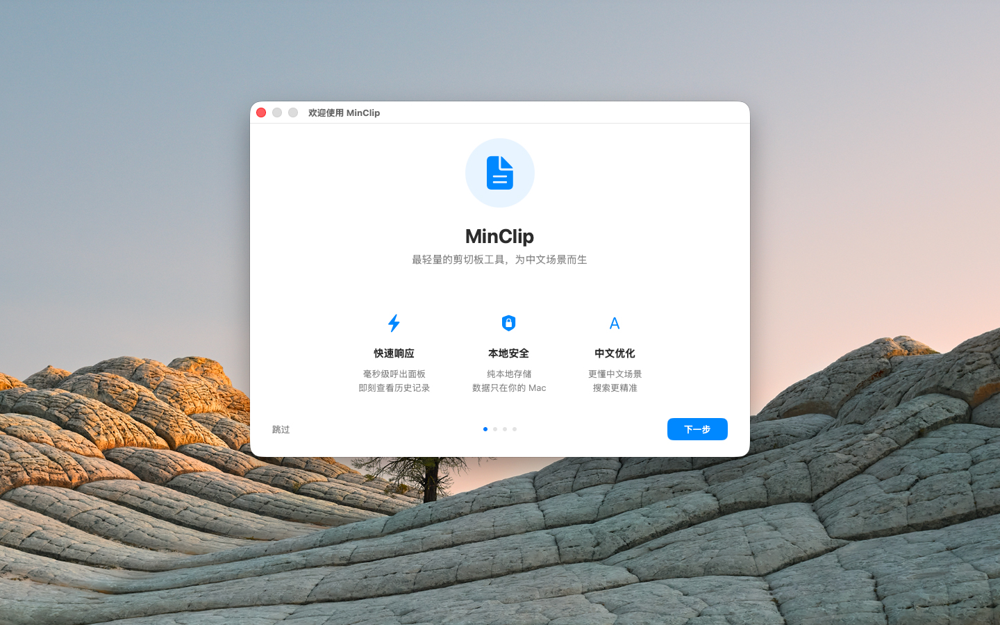
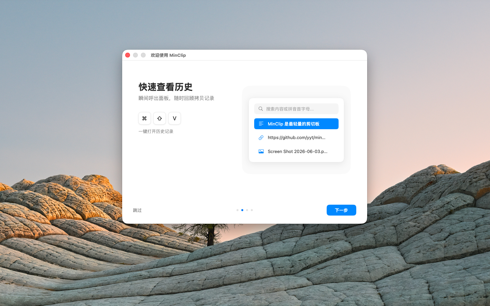
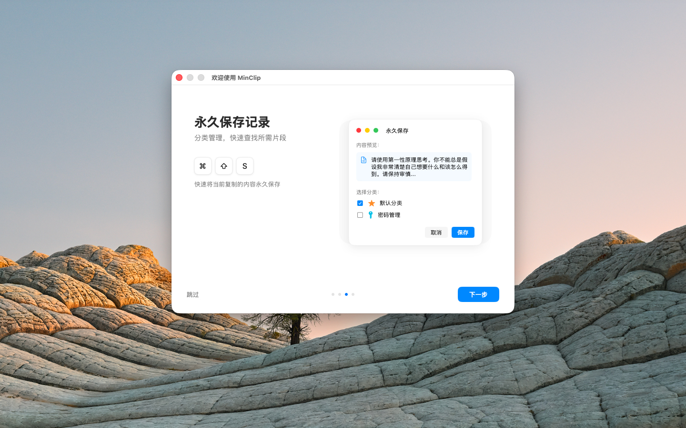

自动捕获文本、图片、文件和富文本内容
点击菜单栏图标或使用 ⌘⇧V 快捷键打开历史记录
将常用内容永久保存到分类中，支持快捷键快速保存
永久保存的内容可置顶，始终显示在列表最上方
自定义分类，支持颜色、图标、拖拽排序和独立存储路径
实时搜索过滤，支持拼音首字母缩写匹配
鼠标悬停查看文本/图片/文件的详细内容
将分类内容导出为 CSV 文件
内置 JSON 格式化、URL 解码、Base64 编解码等工具
自动检测并忽略密码管理器等敏感应用的剪切板内容